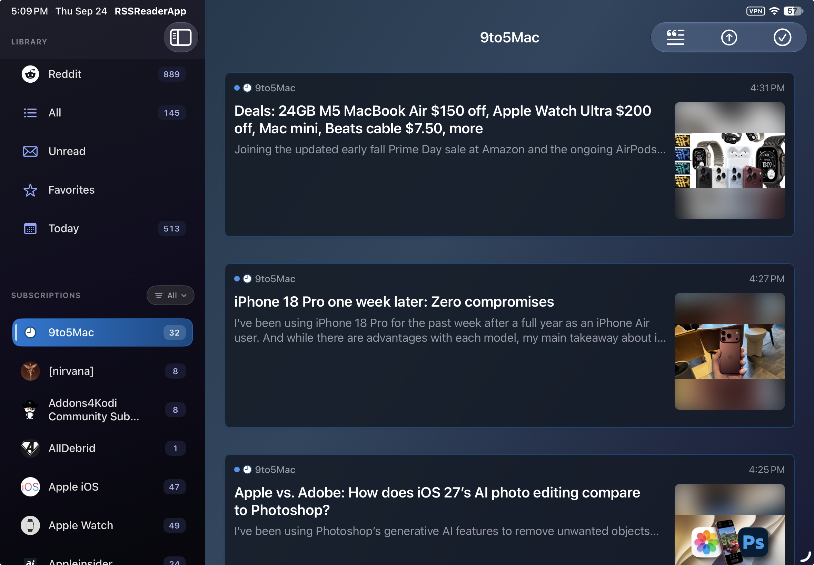

Summarize and ask questions
Summarize RSS articles, Reddit posts and their comments, YouTube videos, and podcast episodes. Use individual summaries, an overall summary, or ask questions across the saved sources.
RSSum for iPhone and iPad
Set up your sources, explore the controls, and choose your AI provider. A visual reference for reading, summaries, Q&A, YouTube, and podcasts.
Reference
Summarize RSS articles, Reddit posts and their comments, YouTube videos, and podcast episodes. Use individual summaries, an overall summary, or ask questions across the saved sources.
Play episodes from your podcast feeds inside RSSum. Summarize an episode or ask questions about it. If the podcast does not supply a transcript, RSSum creates one locally.
Generate a two-host podcast from your saved summaries, then listen inside RSSum. The Batch Podcast chapter below explains the voices, script, and episode workspace.
Interactive walkthrough
Select a screen and then a control to read its explanation.

Reddit connection
RSSum connects through a Reddit app that you create. The app type and redirect URI must match these instructions exactly or Reddit sign-in will fail.
When creating the app in Reddit's developer settings, select installed app as the app type.
Enter redapp://auth exactly as shown. The value is case-sensitive and must not end with a slash.
redapp://authCopy the Client ID shown under your Reddit app's name and paste it into RSSum. Do not paste a client secret.
Remove any leading or trailing whitespace. redapp://auth/ is not valid because it includes a trailing slash.
AI providers
RSSum can use local models, cloud APIs, browser-based AI, or a Mac gateway. The main differences are how much content each option can process, where that processing happens, and what it costs.
Runs entirely on your device. It is private, free, and needs no API key, but it requires a device that supports Apple Intelligence.
Uses Apple Private Cloud Compute. It is free and can handle much more content than Apple Local, making it better for large Reddit threads and long documents.
Uses Google’s Gemini API with your own API key. It is fast, inexpensive, and has a very large context window.
Uses ChatGPT or Gemini through the app’s built-in browser. Sign in with your normal account, including a free account, without configuring an API key.
Lets you choose and run a free local MLX model. It gives you more control while keeping processing on the device.
Uses the Codex or ChatGPT account already signed in on your Mac. It is useful if you already subscribe and want to avoid separate per-request API billing.
Lets an iOS 26 device use the Apple Private Cloud Compute model through a Mac running the latest beta software.
Recommended setup
On an Apple Intelligence device, keep Apple Local enabled for smaller tasks and use Gemini for larger ones. RSSum detects when content exceeds the local context window and lets you choose a larger provider.
Why so many options?
The current list is intentionally broad while local models, cloud models, and gateway workflows are evaluated. It will be simplified before release, and some temporary or experimental options may be removed.
Use a free ChatGPT or Gemini account through the built-in browser when you do not want an API key or usage bill.
RSSum always sends the video’s captions or transcript to the selected provider. Local models favor privacy; cloud models generally offer more context and speed.
Podcast creation needs more context and is currently available with Gemini, Apple Cloud, and providers that run through a Mac gateway.
Mac-powered providers
These providers run through a companion service on your Mac. Your iPhone or iPad sends the prompt over your local network; the Mac forwards it to the selected AI service and returns only the answer.
Use the Codex account already signed in on your Mac. Summarize prepares the request, Codex generates the answer, and the open RSSum Mac app securely relays it back to your iPhone or iPad.
Install the Codex CLI if needed, then sign in. The gateway uses this Mac’s Codex login and its associated usage limits.
codex loginDownload the setup script directly from this guide. It installs Summarize, creates private tokens, configures the daemon, starts it, and prints the iPad connection details.
Download Codex / Summarize setupsetup-rssreader-codex-summarize.shThen run this command in Terminal:
chmod +x ~/Downloads/setup-rssreader-codex-summarize.sh && ~/Downloads/setup-rssreader-codex-summarize.shThe full connection details are also saved to ~/.summarize/rssreader-gateway-info.txt.
The Summarize daemon works locally, while the Mac app provides the network bridge your iPhone or iPad connects to. Both the Mac and the mobile device must remain on the same local network.
Open Settings → Summary Source → Codex / Summarize, then use the values printed by the setup script.
Tap Test Connection. When it reports Connected, Codex / Summarize can power article summaries, Reddit summaries, Overall Summary, and Q&A.
Use Apple’s Foundation Models CLI on your Mac. A token-protected local gateway translates RSSum requests for fm serve, which runs the pcc model and returns the response.
fm available confirms accessIn Terminal on the Mac, confirm that the Foundation Models CLI is installed and that the PCC model is available to this Mac.
fm availableDownload the self-contained installer directly from this guide. It creates a private token, installs reusable Mac launchers, and starts the gateway.
Download Apple PCC Gateway installerinstall-rssreader-pcc-gateway.shThen run this command in Terminal:
chmod +x ~/Downloads/install-rssreader-pcc-gateway.sh && ~/Downloads/install-rssreader-pcc-gateway.sh --startThe gateway Terminal window must remain open while RSSum uses PCC. To start it again later, open the Start RSSReader PCC Gateway launcher installed on the Mac.
Open Settings → Summary Source → Apple PCC Gateway and copy the values shown by the installer.
127.0.0.1 only in Simulator or on the same Mac.Tap Test Connection. A connected result confirms the mobile app can reach the Mac gateway; your first real request also confirms PCC generation is available.